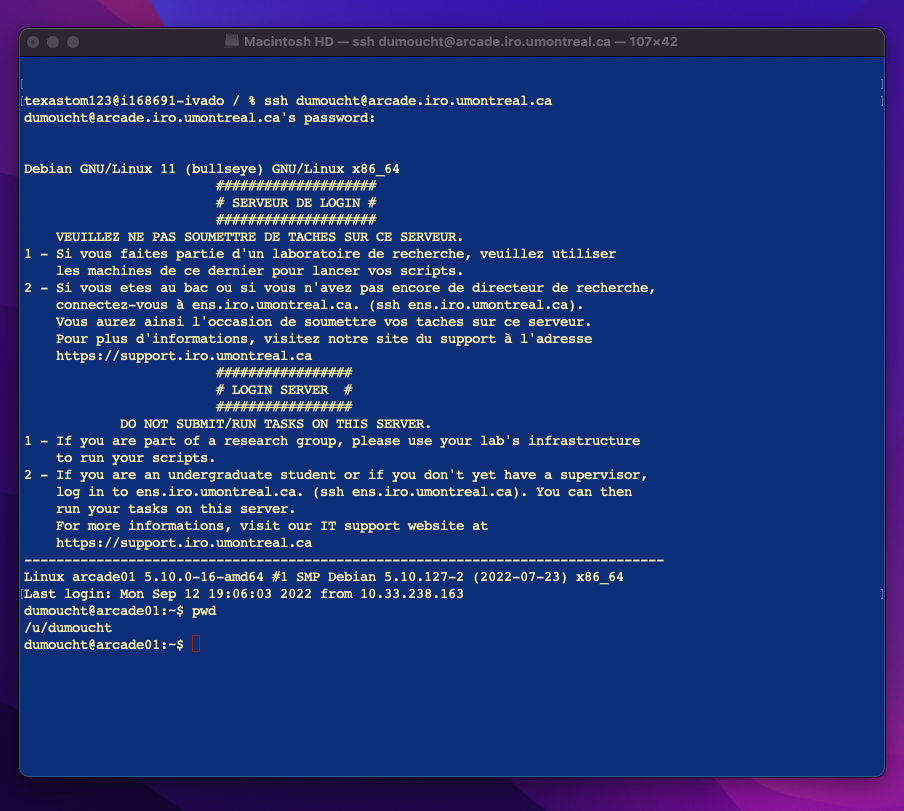
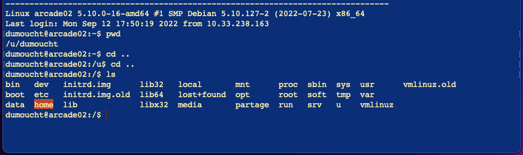
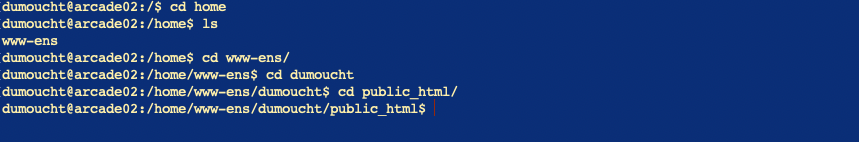
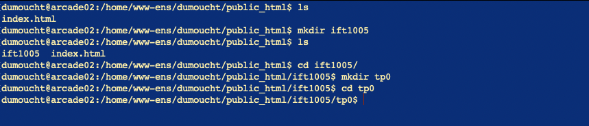
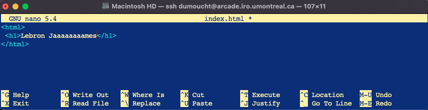
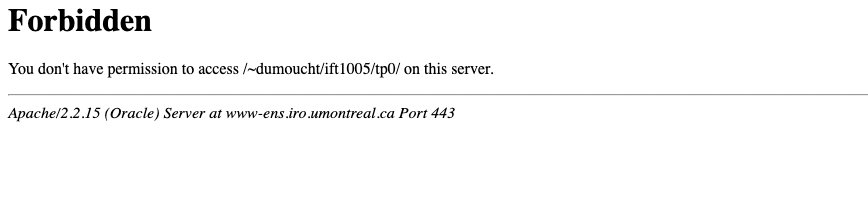
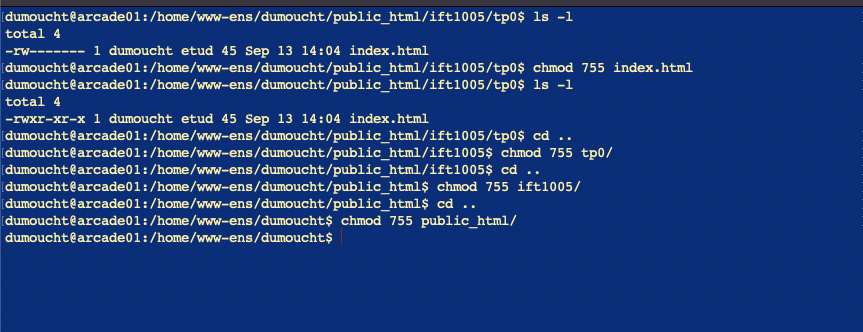

Linux - commandes fondamentales
ls
La commande ls permet d'afficher le contenu d'un répertoire.
- ls Afficher les informations (documents et répertoires).
- ls -l Afficher les informations de manière détaillée.
- ls -a Afficher les fichiers cachés.
- ls -h Afficher la taille des fichiers de facon lisible.
- ls -la Afficher tous les fichiers de manière détaillée y compris les fichiers cachés.
cd
La navigation d’un répertoire à un autre s’effectue avec la commande cd succédée du nom du répertoire.
- cd / Permet de se retrouver à la racine du disque.
- cd ~ ou cd Accéder directement au répertoire de l’utilisateur.
- cd /var/www Aller dans le répertoire /var/www.
- cd .. Remonter dans le répertoire parent à partir de là où vous êtes.
- pwd Renvoyer le chemin absolu du répertoire courant ce qui est utile puisqu’en général le shell n’affiche que le nom du répertoire courant.
cp
Pour créer une copie d’un fichier, on utilise la commande cp
- cp foo/bar.txt baz/ Copier le fichier bar.txt dans le répertoire baz.
- cp -r foo/ baz/ Copier des répertoires entiers (note : si baz existe, la cible sera baz/foo/).
mv
Déplacer un fichier est aussi simple que de le copier, pour cela il faut utiliser la commande mv Cette commande permet aussi de renommer vos fichiers.
- mv foo/bar.txt baz/ Déplacer le fichier bar.txt dans le répertoire baz.
- mv foo_bar.txt baz/ Renommer le fichier foo_bar.txt en foo_baz.txt.
rm
Pour effacer un fichier ou un répertoire on utilise la commande rm
- rm *.txt Supprimer tous les fichiers ayant pour extension txt.
- rm foo.txt bar.txt Supprimer les fichiers foo.txt et bar.txt.
- rm -rf baz/ Supprimer le répertoire baz et tout son contenu.
mkdir
Pour créer un répertoire il suffit d’utiliser la commande mkdir Celle-ci vous permettra de créer un répertoire à l’emplacement où vous êtes.
- mkdir foo Créer le répertoire foo.
touch
Pour créer un fichier il suffit d’utiliser la commande touch Celle-ci vous permettra de créer un fichier à l’emplacement où vous êtes.
- touch index.html Créer le fichier index.html
chmod
La commande chmod permet de changer les droits d'un fichier ou d'un répertoire. Pour exécuter cette commande vous devez être le propriétaire du fichier ou être logué en root.

- chmod 755 foo.txt Donne au propriétaire toutes les permissions pour le sur le fichier foo.txt (7 = rwx). Donne au groupe propriétaire et aux autres utilisateurs les permissions de lecture et d'exécution (5 = r-x).
- chmod 777 foo/ Donne au propriétaire, au groupe propriétaire et aux autres utilisateurs toutes les permissions sur le répertoire foo/.
ssh
La commande ssh permet de se connecter de façon sécurisée à une machine distante.
- ssh john@remotehost.example.com Connexion à la machine distante avec le login john.
- ssh-keygen -t dsa Génération d'une clé DSA (à faire sur la machine locale).
- ssh-copy-id -i ~/.ssh/id_dsa.pub john@remotehost.example.com Copie de la clé publique sur la machine distante.
scp
La commande scp permet de copier des fichiers entre le serveur et le client ssh de manière sécurisée.
- scp foo.txt john@remotehost.example.com: Transfère le fichier foo.txt situé dans le répertoire courant vers le home du compte john de la machine remotehost.example.com.
- scp john@remotehost.example.com:foo.txt ./ Récupère le fichier foo.txt situé dans le home du répertoire du compte john pour le copier dans le répertoire courant.
- scp -r mails/ john@remotehost: Transfère l'intégralité du répertoire mails.
Exercise en classe: se connecter à arcade grâce à ssh
Lien vers l'exerciseSolution:
-
Créer un compte DIRO si ce n'est pas déjà fait
Suivez le tutoriel à la lettre et il ne devrait pas y avoir de problèmes
-
Préalable à la connection au serveur du DIRO avec ssh
Ceux qui ont un système d'exploitation UNIX, ouvrez un terminal. Si vous ne savez pas comment, googlez... (i.e. how to open a terminal in [macOS | linux]?).
Ceux qui ont un système d'exploitation windows, je recommande de télécharger Putty et de partir l'application. Ceux qui aimerait utiliser Linux sur leur ordinateur, téléchargez wsl ubuntu et ouvrez un terminal ubuntu. (note: il est possible de faire la commande ssh sur le command line de windows, mais certains étudiants ont rencontré des problèmes avec cette méthode qui ne servenaient pas lorsqu'ils utilisaient Putty).
-
Se connecter au serveur DIRO avec la commande ssh
UNIX : entrer ssh votreusername@arcade.iro.umontreal.ca dans votre terminal. N'oubliez pas de remplacer votreusername par votre username DIRO.

Windows : dans Host Name, entrez votreusername@arcade.iro.umontreal.ca. N'oubliez pas de remplacer votreusername par votre username DIRO. Le port doit être 22, et le type de connection ssh. Clickez Open.
-
S'identifier au serveur
Entrez votre mot de passe DIRO. Il est normal que rien ne s'affiche lorsque vous tapperez le mot de passe. N'ayez crainte, les touches sont enregistrées. Il suffit de tappez le mot de passe sans faire d'erreurs. Et si vous faites une erreur, appuyer sur Enter et réessayer autant de fois que vous voulez.
Après une connection réussie, votre terminal devrait montrer la quelque chose de similaire à l'image sous:
 -
Naviguer jusqu'à la racine du serveur
Si vous faite la commande pwd (qui affiche le répertoire dans lequel on se situe), vous devriez voir à l'écran /u/votreusername. Nous voulons aller au répertoire /home/www-ens/votreusername/public_html. Pour ce faire, nous devons retourner à la racine (i.e. /). On utilise donc la commande cd .. 2 fois : la première fois pour se retrouver dans le répertoire /u, la deuxième fois pour se retrouver dans le répertoire / .
Une fois à la racine, la commande ls nous imprime le contenu du répertoire racine.
On y retrouve (surligné en orange) le répertoire home. Dirigeons nous dans home avec cd home. Faisons ls (maintenant à partir du répertoire home) et on retrouve (entre autre) le répertoire www-ens. Dirigeons-nous dans celui-ci: cd www-ens. Par la suite, dirigez-vous dans votre répertoire personnel: cd votreusername . Finalement, dans public_html: cd public_html.
 -
Créer le répertoire pour notre cours et pour l'exercise
Tout d'abord, on remarque que notre répertoire public_html ne contient qu'un fichier , soit index.html, grâce à la commande ls. Nous allons créer un répertoire appelé ift1005 pour 'storer' nos sites webs. Pour créer ce répertoire, on tape la commande mkdir ift1005. Puisque nous sommes dans le répertoire public_html, le nouveau répertoire ift1005 sera créé dans ce dernier. Faire ls nous révelera le nouveau répertoire.
Entrons dans notre nouveau répertoire: cd ift1005. Créons un nouveau répertoire intitulé tp0 à l'intérieur de ift1005: mkdir tp0. Entrons dans ce nouveau répertoire: cd tp0.
 -
Créer notre premier fichier html et y ajouter du contenu
Créons notre fichier initulé index.html en tappant la commande touch index.html. Pour 'éditer' un fichier, on utilise un éditeur de texte pour terminal. Il en existe plusieurs, nous utiliseront nano. Pour éditer notre fichier index.html avec nano, tappons la commande nano index.html. L'éditeur de texte nano s'ouvriera prêt à 'éditer' notre fichier. Ajoutez-y le texte suivant (Vous pouvez modifier le texte se trouvant en les tags h1 pour ce qui vous plaît):
<hmtl><h1>Sample text here...</h1></hmtl>Pour fermer nano, faire ctrl + x pour Exit, y pour sauvegarder les modifications, puis Enter pour confirmer de sauvegarder les modifications dans le fichier intitulé index.html.
-
Visitez votre site (?)
Ouvrez une nouvelle page dans votre browser de préférence. Dans la barre de recherche, entrer l'url suivant:
https://www-ens.iro.umontreal.ca/~votreusername/ift1005/tp0/
Note: il faut remplace votreusername par votre username et garder le ~.
Oups! Forbidden
 -
Fixer le forbidden
Le browser ne peut pas avoir accès au fichier index.html parce qu'il n'a pas les permissions nécessaire pour lire le fichier index.html. Il faut changer les permissions des fichiers de notre site web ainsi que des répertoires qui contiennent nos fichiers jusqu'au répertoire public_html inclusivement. Nous voulons que le propriétaire conserve toutes les permissions (7 = rwx) et donner au groupe et aux autres utilisateurs les permissions de lecture et d'écriture (5 = r-w).
Puisqu'on se situe présentement dans tp0, commençons par changer les droits de index.html. (note: a tout moment, effectuer ls -l pour voir les permissions sur vos fichiers et répertoires). Tapper chmod 755 index.html. Changons maintenant les permissions sur le répertoire tp0: cd .. puis chmod 755 tp0. Changons ceux de ift1005: cd .. puis chmod 755 ift1005. Finalement, changons ceux public_html: cd .. puis chmod 755 public_html.
 -
Visitez votre site !!!
Rafraichir la page qui affichait forbidden et voilà!